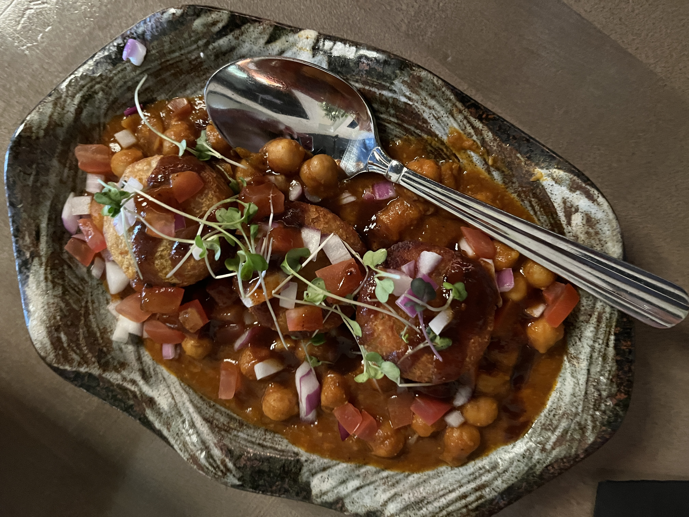
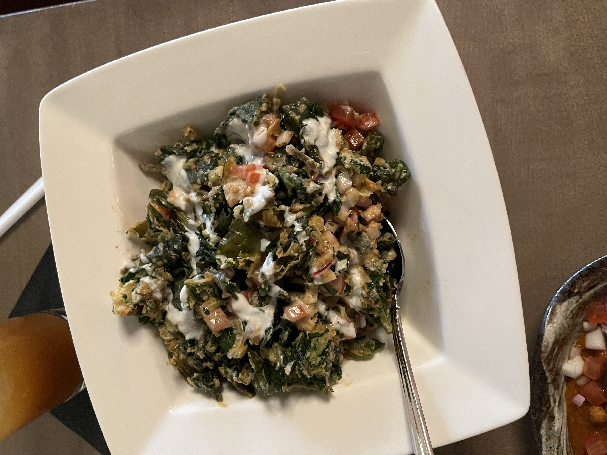
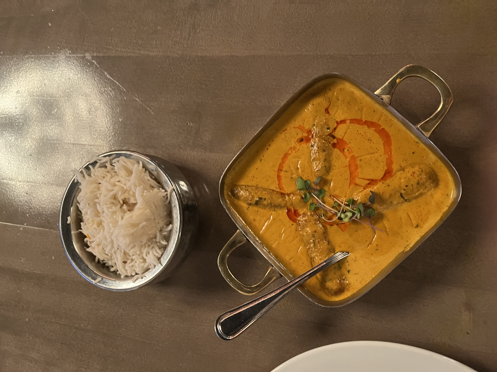
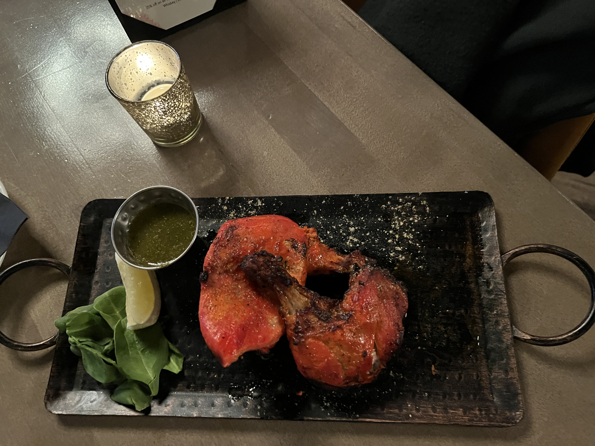
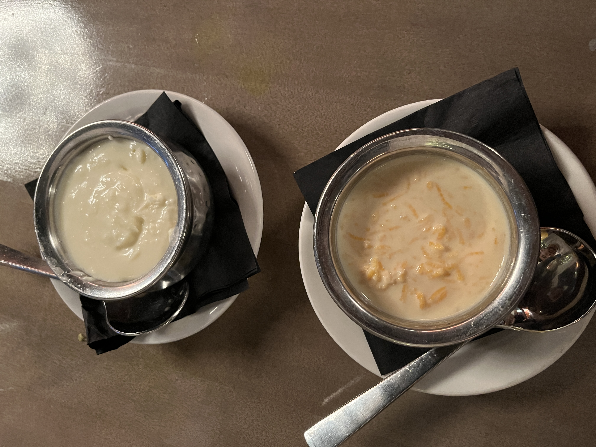

Veda
Rittenhouse Square, Philadelphia
Introduction
This was a very spontaneous trip to Philadelphia, and since we left Princeton in the early afternoon, we were able to see the Rodin Museum! It was amazing to see so many of his most influential works up close, and it was a peaceful visit even though the museum is in the heart of the city.
I haven’t been able to eat Indian food at a restaurant in so long. Even though it’s one of the most GF-friendly cuisines, many restaurants are not educated on what gluten is and hence can cross-contaminate. It’s not terrible for me, because I can cook a lot of Indian dishes at home, but there are certainly some dishes that are just too time-consuming to be worth it.
We booked Veda last minute and found a slot only for 5pm, which was ok since we wanted to head back to Princeton relatively early in case there was severe traffic. Parking around the restaurant was easy to find but expensive.
Appetizers
I miss chaat a lot. Pani puri, dahi puri, etc will always be out of reach, since it’s difficult to make these dishes without the factory-manufactured handheld wheat puris. But, other, more deconstructed forms of chaat like bhel puri are still possible. At Veda, I tried spinach chaat (which seemed to have an approximation of spinach pakoras in it?) and ragda patties. It was great to have the classic chaat flavors again: tamarind, onion, tomato, etc.


Although the restaurant seems to be fancy (fancy enough to mark gluten-free items, at least), they didn’t deviate too far from the traditional chaat flavors and components. I found both dishes to be very comforting and to take me back to the small chaat restaurants I used to go to as a kid (in CA, not in India). The spinach chaat was a little inventive, but it didn’t feel too far from the taste of mixed vegetable pakoras, where the occasional leaves soak up the oil during deep frying.
Main Dishes
We ordered malai kofta and tandoori chicken for the main dishes.


Malai kofta is notoriously difficult to make at home1, and it’s my favorite North Indian dish, so it was the obvious choice. We got it with a spice rating of 4 out of 5, which ended up being right for me but too much for weaker souls.2 The gravy was good, but the koftas didn’t have as much flavor in them as I would have wanted. In theory, a good gravy can compensate for a blander kofta, but in implementation, this doesn’t work out so well.
The tandoori chicken was pretty dry, as is customary. I never ate this much growing up, since I was vegetarian. It felt a bit weird to have meat with Indian flavors and chutneys, and I wasn’t really able to get past that. The mint chutney did taste really good with the tandoori char. It made me wonder: if the restaurant had mint chutney, why not put it on the chaat too?
Desserts
We tried the mango lassi, which was delicious but required my mouth to act as the world’s most powerful vacuum in order for me to drink through the straw. We also ordered kheer and shrikhand (the two exciting GF dessert options).

I didn’t really eat these desserts as a kid because I was a gulab jamun girl, but I was still excited to try them out. The shrikhand was mixed with white chocolate and had some raspberry taste (though I didn’t see any raspberries?), which was pretty modern. They also gave a lot of it, considering how thick the dessert is. It was absolutely delicious, and getting the little, easily melted pieces of white chocolate in my bite made me happy.
The kheer was a little disappointing. The rice seemed undercooked, and the “pudding” didn’t really come together. It was like slightly undercooked rice swimming in a vaguely sweet liquid. If not for the texture issues, it could have been better than the shrikhand, since it wasn’t so overwhelmingly sweet.
-
Even in its most basic form, it requires par-boiling potatoes and grating them with paneer (which is so hard to grate) to form the koftas. Generally adding more vegetables gives the kofta more flavor. If you have the wrong amount of moisture, the dumplings fall apart during frying, which is really disappointing after all of that work. Even if you succeed, you still have to make the gravy afterwards… ↩
-
This inspired an order of raita, which was pretty good but needed more cucumbers or tomatoes in my opinion. ↩